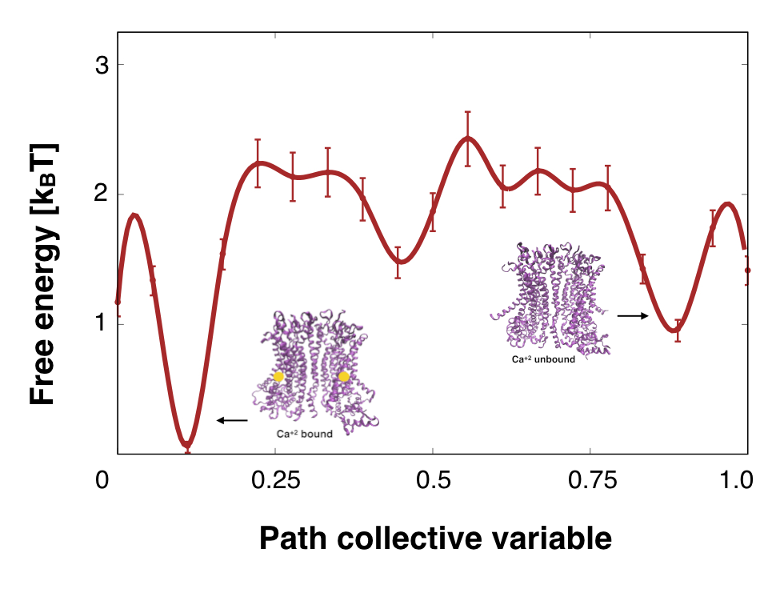
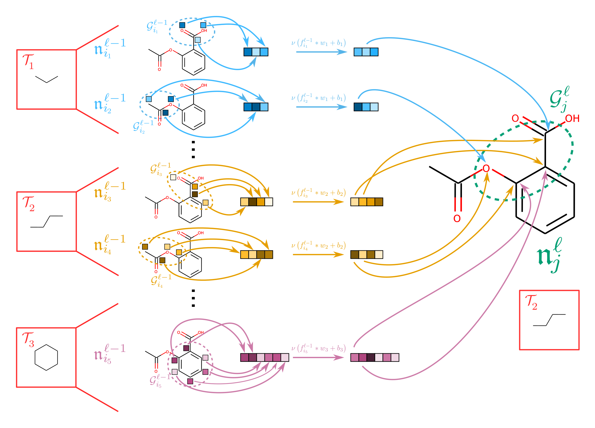

I'm an Assistant Professor at
Cornell University
Department
of Chemistry and Chemical Biology,
having started Summer 2023.
You can find my lab research website
here.
Broadly speaking, my research area is theoretical and computational chemistry. This means that
theoretically
speaking, I can both use computers and do chemistry. I received my PhD working with Profs. Aaron Dinner
and
Jonathan Weare on enhanced sampling algorithms for molecular dynamics. Currently, I spend most of my
time
thinking about how we can take biomolecules and biomolecular data, feed them
into a computer, and get scientific insight back out.
Download my CV.
Research
My research has focused on the intersection of data science, machine learning, and statistical
approximation with
chemistry.
Below are some projects I have worked on in the recent past.
Extracting Free Energies from Cryo-Electron Microscopy
Cryo-electron Microscopy has recently emerged as a leading technique for extracting protein
structures. But
in principle, Cryo-EM should give us the entire range of possible structures for a given
macromolecule,
allowing us to extract biological free energies. Working with the Structural Molecular
Biophysics Group at
Flatiron, I developed new algorithms to extract free energies from Cryo-EM data.

New approaches for learning on permutation-equivariant structures
While symmetry under permutation is fundamental to chemistry,
it also restricts the space of possible learning algorithms:
if not constructed carefully, algorithms that attempt to learn new structures must face a
combinatorial
explosion
in the number of terms.
I am worked with Prof. Risi Kondor to develop new approaches to learning on chemical systems
by intelligently exploiting and learning substructures of a chemical system.

Error Estimates for MBAR
The Multistate Bennett Acceptance Ratio is a popular framework for estimating free energies from
multiple
biased simulations.
Historically, the ways in which sampling from the individual biased simulations leads to overall error have
been poorly
understood.
In recent work, Sherry Li and I derived error estimates for the MBAR equations.
Our work is the first to rigorously account for the affect of sample correlation and can trace
how sampling
in individual states affects the total error.
Selected Papers
-
Li, Xiang Sherry, et al. Understanding the Sources of Error in MBAR through Asymptotic
Analysis.
arXiv preprint arXiv:2203.01227 (2022).
arXiv
-
Thiede, Erik H., Wenda Zhou, and Risi Kondor.
Autobahn: Automorphism-based graph neural nets.
Advances in Neural Information Processing Systems 34 (2021): 29922-29934.
PDF
-
Giraldo-Barreto, Julian, et al. A Bayesian approach to extracting free-energy profiles
from
cryo-electron microscopy experiments. Scientific Reports 11.1 (2021): 1-15.
PDF
-
Thiede, Erik H., et al. Galerkin approximation of dynamical quantities using trajectory
data. The
Journal of Chemical Physics 150.24 (2019): 244111.
PDF
{kind=link}
{kind=link}